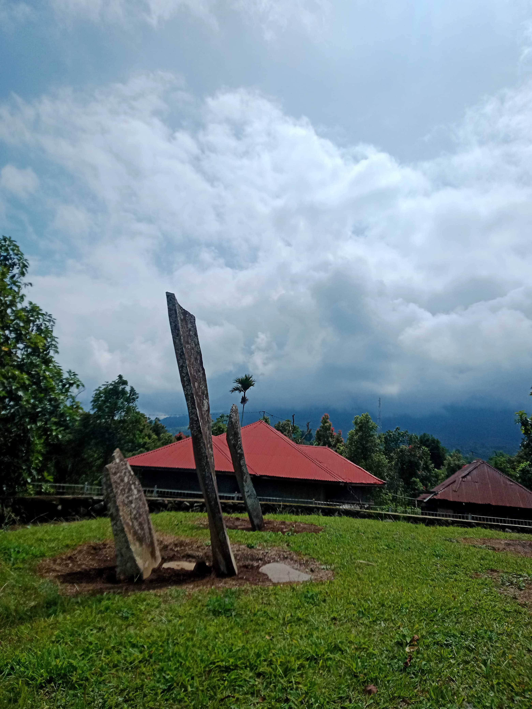
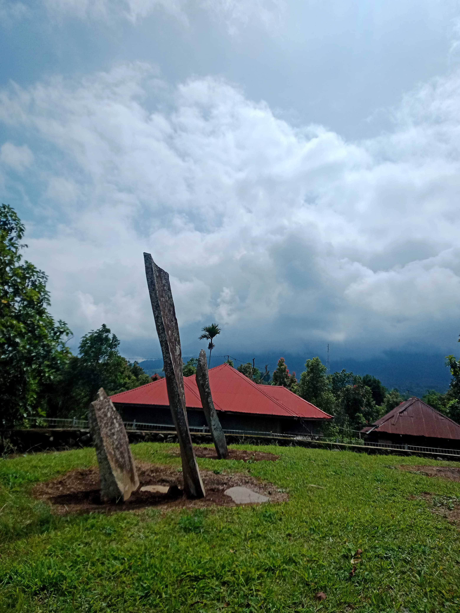

| Nama Lokasi |
|---|
| Silek Lanyah |
| Paih Baluik |
| Dangau Baca |
| Air Terjun |
| Bakua Adat |
| Stand Kaum/Suku |
| Kebun Buah |
| Randai |
| Kebun Agroforestri |
| Lubuk Larangan |
| Batagak Pangulu |
| Tambua Tansa |
| Puncak Data |
| Air Terjun Baburai Tinggi |
 


| Jenis UMKM |
|---|
| Data Potensi UMKM pertanian |
| Sentra Produksi Komoditi Padi dan Palawija |
| Padi: Seluruh Jorong di Nagari Tanjung Alam |
| Jagung: Jorong Bulaan, Ampaleh, Gt.Bawah, Duo Baleh Koto |
| Cabe: Gunung, Koto Laweh, Sawah Parik, Gt.Ateh |
| Ubi Kayu: Gantiang Bawah, Duo Baleh Koto |
| Lobak: Gunung, Koto Laweh |
| Tomat: Gunung, Koto Laweh |
| Pisang: Seluruh Jorong di Nagari Tanjung Alam |
| Jenis Produksi | Luas (Ha) |
|---|---|
| Karet | 3 |
| Kelapa | 3 |
| Kulit Manis | 200 |
| Cengkeh | 5 |
| Tebu | 100 |
| Kopi Arabika | 20 |
| Kakao | 1000 |
| Enau | - |
| Pinang | 0,5 |
| Garda Munggu | 0,5 |
| Kemiri | 0,5 |
| Tembakau | 6 |
| Uraian | 2022 | 2023 |
|---|---|---|
| Hotel | - | - |
| Homestay | - | - |
| Rumah makan/restoran | 16 | 20 |
| Cafe dan Resto | 1 | 1 |